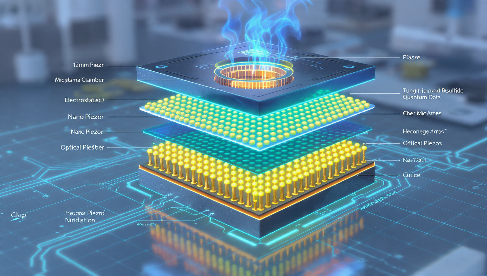

8×8
nodes per layer
A 64-node square plane — one live 64-bit word.
A processor stacked in boron: an 8×8 grid, eight layers deep — 512 nodes — a microplasma chamber over piezo films, a hexagonal boron-nitride lattice, and tungsten-disulfide quantum dots, driven by real, live 512-bit math.
Eight layers exploded into an isometric tower, each an 8×8 array of nodes. Each layer carries a live 64-bit word L0–L7 that composes into the full CORE[511:0]. Drive plasma containment, piezo, coupling, and output gain — ignite the chamber and watch all 512 nodes light. The 512-bit arithmetic is genuine; the optics and materials are simulated.
The original design render — the stack pulled apart to show the microplasma chamber firing at the top, the piezo films, the hexagonal boron-nitride substrate, and the gold tungsten-disulfide quantum-dot arrays, all over a cyan circuit base.

This is a concept and an interactive simulation — a way to think with the eyes about a processor built from 2D materials: a hexagonal boron-nitride lattice as the substrate, tungsten-disulfide quantum dots as the active sites, piezoelectric films to drive them, and a microplasma chamber on top.
Kept honest: hBN and WS₂ are real materials; the 512-bit math runs live in your browser. But the microplasma drive, the optics, and the performance are a visualization of the design — not measurements of a fabricated, benchmarked chip.
honest framing · concept + simulation, not a benchmarked deviceOne square, eight deep. Each layer is an 8×8 array; eight layers close the tower at 512 nodes and a 512-bit word.